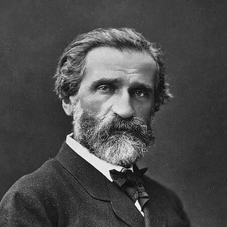

Compositeurs › Giuseppe Verdi

Giuseppe Verdi
Le compositeur d'opéra italien le plus aimé : ses mélodies sont devenues des chants populaires dans le monde entier.
Sa vie
Il naît aux Roncole, près de Busseto (Parme), fils d'un aubergiste. Il apprend à jouer de l'orgue de l'église du village et, grâce au soutien d'un commerçant de Busseto, Antonio Barezzi, peut aller étudier à Milan.
En 1832, il n'est pas admis au Conservatoire de Milan, qui porte aujourd'hui son nom. Après des années difficiles, le succès arrive en 1842 avec Nabucco et le chœur « Va, pensiero ».
Suivent des chefs-d'œuvre comme Rigoletto, Le Trouvère, La traviata, Aida, Otello et Falstaff. Il meurt à Milan en 1901 : lors du transfert de sa dépouille vers sa tombe définitive, un grand chœur dirigé par Arturo Toscanini entonne « Va, pensiero » devant une foule immense.
Portrait : Ferdinand Mulnier (c. 1872), domaine public, sur Wikimedia Commons.

Anecdotes
- La traviata, aujourd'hui l'un des opéras les plus joués au monde, fut un échec lors de sa création en 1853 à La Fenice de Venise.
- Le « Brindisi » (« Libiamo ne' lieti calici ») est la chanson à boire du premier acte, en rythme de valse.
- Il a fondé à Milan la Maison de repos pour musiciens, où il est enterré, et lui a légué les droits de ses opéras.
Au piano
- Pense à la voix d'un chanteur : la mélodie doit respirer à la fin de chaque phrase.
- Le Brindisi est à trois temps : un accent léger sur le premier, les deux autres plus doux.
- Joue-le avec élan et gaieté : c'est une fête.
Ses morceaux à apprendre 1 morceau

Apprends-le note par note avec Piano Learning
Avec « Attends la note », le morceau s'arrête jusqu'à ce que tu joues la bonne touche, sur ton téléphone ou sur ton propre piano (l'appli t'écoute). Mains séparées, vitesse dès 10 %, partition toujours sous les yeux.
Télécharge-la gratuitement sur Google Play Gratuit comme La Campanella, la Marche turque, Jingle Bells et Frère Jacques. Des centaines d'autres morceaux avec un seul achat, sans abonnement.